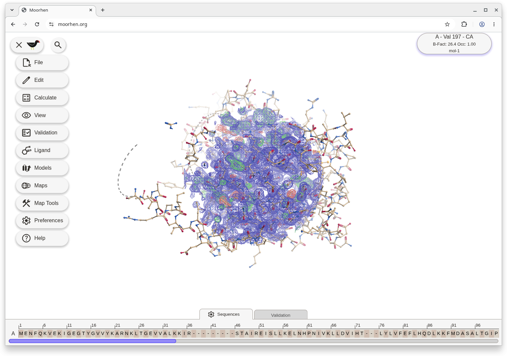
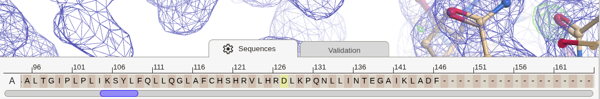
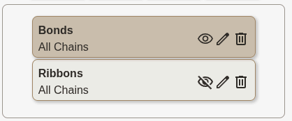

Welcome to Moorhen (“Coot on the Web”)
Open a web browser window and point it at moorhen.org.
Getting Started
Let’s load some data:
- File → Load Tutorial Data … → Tutorial 1 → OK

Moorhen displays a protein model, a blue 2Fo-Fc-style map and an Fo-Fc-style map in green (positive) and red (negative).
- Use Left-Mouse click and drag to rotate the view. (just click and drag, when using at trackpad)
- Use scroll-wheel scroll to zoom in and out (use 2-finger drag on a trackpad)
- Use middle-mouse click to centre on an atom (use Option-click on a trackpad on a Mac)
- To pan the view, use middle-mouse click and drag (use Shift Option click and drag on a trackpad on a Mac)
You can change the speed that moving the mouse spins the view:
- Preferences → “Mouse Sensitivity” → 0.4 (# for example)
- Click off the Preferences dialog to make the dialog disappear.
- Likewise one can change the sensitivity of the zoom using the “Mouse wheel zoom sensitivity” slider. I find a value of around 7 to 8 to be more useful than the default.
- Similarly, you can change the thickness of the map lines if you wish using “Map contour settings…”
- Use “[” and “]” on the keyboard to adjust the radius of the density.
- Ctrl middle-mouse scroll to change the contour level (one step at time seems good to me).
Search Bar
It can be hard to remember where are different functions in moorhen. The search bar is a quick way to find what you are looking for. Just type in a few letters of the function you are looking for and Moorhen will show you a list of matching functions. Click on the item you want like a normal menu item.

Sequence Viewer

At the bottom of the screen, you will see the sequence of the loaded model.
- Click on any residue to center the view on it.
- Click on the gear icon to modify parameters (change which model is displayed, the number of sequence lines displayed, and the column width)
Models
Click on the Models button. The model panel opens. The top panel shows the current molecule representations.

- Click on + icon to add a new representation of the model.
- Let's make a new ribbons representation by selecting the style ribbons and clicking OK.
- Click on the eye icon to hide the model representation for now.

Maps
- Click on the Maps button.
- The Maps panel opens. The top panel shows the current maps loaded in the session.
- The 2Fo-Fc-style map has a blue icon and the difference map has an icon with red and green. You can use the sliders there to adjust the contour level. Click or slide the slider for the 2Fo-Fc map so that the level is about 0.42 (1.40 rmsd) or thereabouts. Set the difference map to a level of around 0.53 (3.6 rmsd) (if it isn’t already).
- You can hide the panels by clicking on the panel icon in the tab, or close them by clicking the X.
- Ctrl scroll-wheel scroll to change the contour level of the currently active map.
Let's start with Tutorial 1.